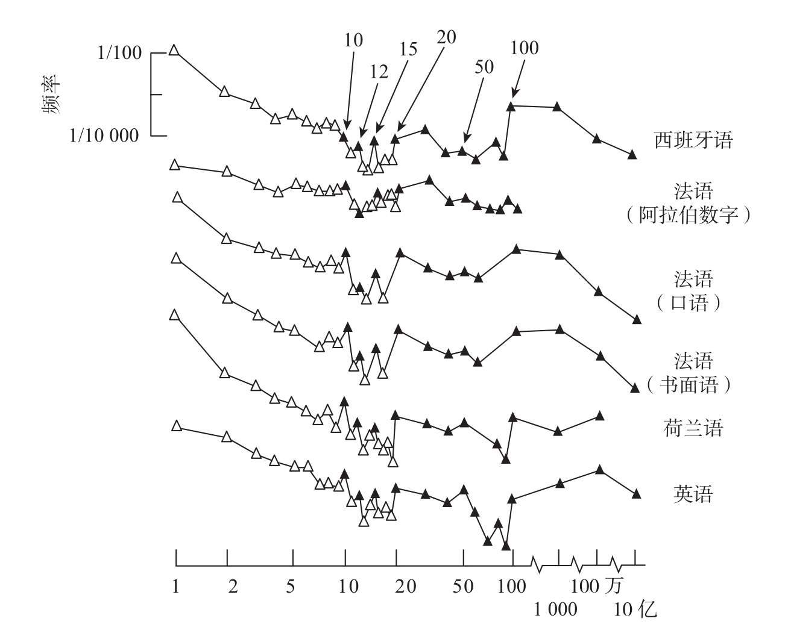
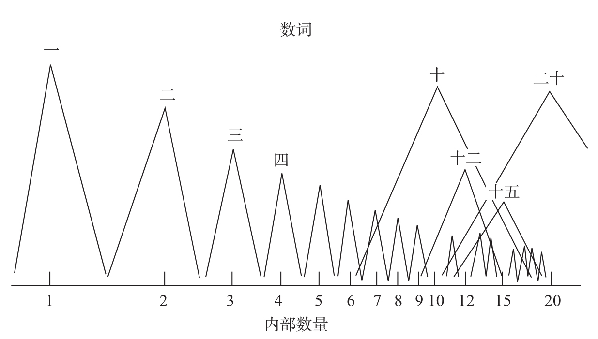

你想不想来打个赌？随便打开一本书，注意你遇到的第一个数字。如果这个数字是4、5、6、7、8或9，你赢10美元。如果是1、2或3，我赢同样的钱。大多数人都很乐意打这个赌，因为他们认为自己赢的概率是6：3。但是，此赌必输。不管你相信与否，数字1、2和3在印刷品中出现的次数大约是所有其他数字出现次数总和的两倍！13
这个发现严重违反直觉，因为9个数字看起来似乎是等价而且可以互换的。但我们忘记了一点，印刷品中出现的数字并不是由一个随机数发生器生成的。每个数字都代表一个人试图把一些来自大脑的数量信息传递给另一个人。因此，在某种程度上，每个数字的使用频率，取决于我们的大脑对相应数量进行表征的难易程度。数字心理表征的精确度下降，影响的不只是我们的感知，同时还有数字的产出。
杰柯·梅勒和我系统地寻找了词频表中的数词14。这些表总结出某个单词（比如five）在书面或口语中出现的频率。很多语言中都有词频表，从法语到日语、英语、荷兰语、加泰罗尼亚语、西班牙语，甚至一种在斯里兰卡和印度南部使用的德拉维语言——卡纳达语。尽管在文化、语言和地理上存在着巨大的差异，但在所有这些语言中，我们都观察到了同样的结果：数字出现的频率随着数字增大而稳定降低。
例如，在法语中，“un”（1）这个词约每70个词出现一次，“deux”（2）约每600个词出现一次，“trois”（3）约每1 700个词出现一次，等等。从1到9，数词出现的频率递减，11到19，包括10到90的整十数也是如此。不仅是阿拉伯数字，甚至还包括从“第一”到“第九”的序数词，它们在书面文字或口语中均出现了类似的递减趋势。另外还有一些具有普适性的偏差：“零”出现的频率非常低，到10、12、15、20、50、100时会出现峰值（见图4-4）。值得注意的是，尽管不同语言中表达数字的发音方式差别很大，这种跨语言的规律仍然存在。如日语中没有整十数，荷兰语中十位和个位需要换位，法语数词70、80和90中隐含基数20。

在所有语言中，数字在书面文字或口语中出现的频率随数字增大而降低，约整数10、12、15、20、50、100的出现频率局部增大。比如，我们看到或听到2的频率比听到9的频率高10倍左右。
图4-4 数字的出现频率
资料来源：Dehaene & Mehler, 1992。
我认为，这些语言规律再次反映了我们的大脑进行数量表征的方式。然而，在得出结论之前，我们必须检验一下另外一些可能的解释。因为歧义也可能导致这种现象。在许多语言中，“一”“一个”没有什么区别，这可能是法语中“un”的使用频率升高的原因。然而在英语中显然不是这样，英语中“one”只是一个数词。大于2的数字就不存在歧义这个问题，但在2之后数字的使用频率急剧下降。
另一个可能的因素是我们对计数的喜好。在我们的环境中，许多对象都是从1开始编号的。在任何一个城市，编号为1的房屋要比编号为100的房屋多，因为所有的街道都有一个1号，但有些没有达到100号。这种效应肯定有助于提高小数字的出现频率，然而我们很快就可以算出来，这一效应无法解释为什么在1到9的区间内数字出现的频率会下降。
我们也应该考虑一下纯粹的数学解释。很少有人知道以下这条非常反直觉的数学定律：从任意本质上平滑分布的数字场中抽取若干随机数，数字第一位是1的频率远大于第一位是9。这个奇异的现象被称为本福特定律15。美国物理学家弗兰克·本福特（Frank Benford）观察到一个有趣的现象：在他所在大学的图书馆里，对数表头几页的磨损要比最后几页更严重。当然没有人会像读一本难看的小说那样，在中途停止读对数表。为什么他的同事们必须从对数表的开头查询而不是从最后呢？是不是因为小数字比大数字使用得更频繁呢？带着这样的困惑，本福特发现，所有来源的数字——美国湖泊的水平面、同事家的街道地址、整数的平方根，等等，数字第一位是1的概率约为第一位是9的6倍。大约31%的数字第一位是1，19%的数字第一位是2，12%的数字第一位是3，接下来的数字出现在第一位的频率依次递减。一个数字第一位是n的概率可以非常准确地由公式P（n）=log10（n+1）-log10（n）预测。
关于这条规律的真实起源我们仍然知之甚少，但有一点是肯定的，这是一个纯粹的形式定律，完全由我们的数字符号的语法结构决定。它与心理学没有半点关系，一台计算机在随机打印阿拉伯数字甚至拼写数词时都会重复这一定律。唯一的约束似乎在于，从足够平滑的分布中抽取的数字跨越了多个数量级，例如，从1到10 000。
本福特定律肯定有助于提高自然语言中小数字的使用频率。然而，它的解释力度是有限的。这一定律只适用于多位数中最左边一位数字的使用频率，对1至9之间数字的频率不会有任何影响。但是杰柯·梅勒和我所做的测量相当直接地表明，人的大脑认为谈论数字1比谈论数字9更重要。不同于本福特定律，这一现象并没有影响到较大的多位数的产出。
如果不是数字符号的语法驱使我们更频繁地使用小数字，难道是大自然本身吗？在我们的环境中，小的集合难道不是出现得更频繁吗？仅举一个例子，如今，我们提到自己有几个孩子，通常只需要4以下的数字！然而，作为数字频率越来越低的一般性解释，这种说法是错误的。哲学家戈特洛布·弗雷格（Gottlob Frege）和奎因（Quine）早就证明，客观地讲，在我们的环境中，小数目出现的概率并不比大数目的大16。在任何情况下，事物的潜在无限性都可能被记数。为什么我们喜欢讲“一副”牌，而不是54张牌？世界主要是由小的数集组成的这种想法，是知觉和认知系统强加给我们的一种幻觉。不管我们的大脑怎么想，自然并不是这样组成的。
在不诉诸哲学论证的情况下，为证明这一点，我们先来考虑一下前缀为数字的单词的分布，如“bicycle”（自行车）或“triangle”（三角形）。正如“2”比“3”更频繁地出现，前缀是“bi”（或“di”或“duo”）的单词多于前缀是“tri”的单词。重要的是，即使环境因素对小数字的偏向很少或根本没有，这一规律仍然正确。如时域，我的英语字典中列出了14个前缀为“bi”或“di”的时间词，从“biannul”（一年2次）到“diestrual”（间情期）；5个前缀为“tri”的单词，从“triennial”（3年）到“triweekly”（每3周）；5个带有表示4的前缀的单词；只有2个带有表示5的前缀的单词，它们是生僻字“quinquennial”（每5年）和“quinquennium”（5年期）。可见，随着数字越来越大，相关的词就越来越少。很难看出这是由于环境的偏向造成的。在自然界中，以2个月为周期的事件并不特别常见。罪魁祸首是我们的大脑，当事件发生时，它更关注小数字或约整数。
如果词汇对小数的偏向能够在没有任何环境偏向的情况下出现，那么与之相反，在有些情况下，一些客观上存在的偏向未能被成功地纳入词汇中。4个轮子的车远多于2个轮子的车，但后者有数量前缀（bicycle，自行车），而前者没有（quadricycle？四轮车？）。世界上存在的数字规则中，似乎只有那些数量足够小的才会被词汇化。例如，我们有前缀为数字的单词用来描述三叶植物（trifoliate三叶的，trifolium三叶草；法语中是trèfle），但其他许多具有固定的大量叶片或花瓣数目的植物或花卉，用来描述它们的单词却没有类似的数字前缀。像“octopus”（章鱼、八爪鱼）这样明确代表一个精确大数字的词是非常罕见的。最后一个例子是蜈蚣，它是一种节肢动物，有21段体节和42只脚，通常在英语中被称为“centipede”（100只脚），而在法语中被称为“mille-pattes”（1 000条腿）！很显然，只有在符合我们偏向于小数字和约整数的认知结构时，自然界中的数字规律才会受到关注。
人类语言深受这种与动物和婴儿共有的非言语数字表征的影响。我相信，仅凭这一点，就可以解释为什么词频普遍随数字增大而下降。我们之所以更频繁地表达小数字，是因为我们的心理数轴的表征精度在下降。数量越大，我们的心理表征越模糊，我们越觉得表达其精确数量的必要性很小。
约整数是个例外，因为它们可以表达数量大小的范围。这就是为什么数词“十”“十二”“十五”“二十”“五十”和“百”出现的频率要高于与它们邻近的数字。总而言之，数字出现频率的整体递减和局部峰值，都可以用内部数轴的标记来解释（见图4-5）。在儿童习得语言的过程中，他们学会给每个数量范围命名。他们发现，“二”这个词适用于他们与生俱来的一种知觉；而“九”仅对应一个确切的但是很难精确表征的数量9；人们经常用“十”来表示5到15之间的任意数量。因此，比起“九”，他们更频繁地说“二”和“十”，于是保持了数字频率的规律分布。

数量心理表征的组织形式引起数字出现频率的降低。数字越大，我们的心理表征越不准确；于是，我们越少使用相应的数词。至于像10、12、15或20这样的约整数，它们代表较大的数量范围，因而使用的频率高于其他数词。
图4-5 对数量的心理表征
资料来源：Dehaene & Mehler, 1992。
最后一个细节：我们的研究结果表明，在所有西方语言中，数字13出现的频率要低于12或14。这似乎源于人们对“魔鬼的一打”（Devil’s dozen）的迷信，它赋予13负面的意义，其流传之广使美国的许多摩天大楼没有13层。在印度没有这种迷信，数字13的使用频率没有出现显著的下降。数字的使用频率甚至在最微小的细节上都忠实地反映了它们在我们心目中的重要性。